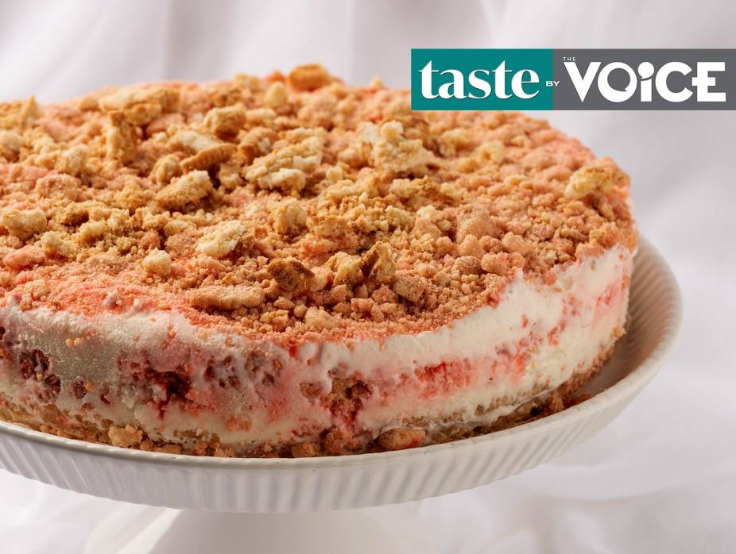

Strawberry Shortcake Ice Cream Cake

Easy dairy delicious desert cake. Appropriate for Shavuos time.
The combination of cookie crust, vanilla ice cream, and strawberry-flavored cookie crumble makes this an ideal dessert.
The best part? It’s really easy to put together!
Ingredients:
- 24 Golden Oreos or vanilla sandwich cookies
- 4 tablespoons butter, melted
- 12 Golden Oreos or vanilla sandwich cookies
- 1 tablespoon butter
- 1 box Gefen Strawberry Jell or other strawberry gel powder
- pink or red food coloring, such as Gefen (optional)
- 1 container vanilla ice cream
Steps:
- Line the bottom of a seven-inch springform pan (eight- or nine-inch is fine too) with Gefen Parchment Paper.
Spray the sides with oil spray.
- Place the cookies in a food processor fitted with the S-blade and pulse into crumbs.
Add melted butter and mix until combined.
- Press mixture into the bottom of pan. Place in the freezer.
- Take ice cream out of the freezer and place in the fridge to soften.
- Place 10 cookies in the food processor and pulse into large crumbs. Add butter and crumble into pea-sized pieces.
Add strawberry gel powder and mix until combined.
For a more colorful crumble, add food coloring.
- Remove pan from freezer. Scoop half of the vanilla ice cream into the pan and spread evenly. Sprinkle on 1/4 of the strawberry crumble.
Scoop the other half of the ice cream, spread evenly, and top with the remaining strawberry crumble.
- Alternatively, you can skip the middle layer and simply scoop the full container of ice cream onto the crust, spread evenly,
and sprinkle on the strawberry crumble.
- Freeze and enjoy!